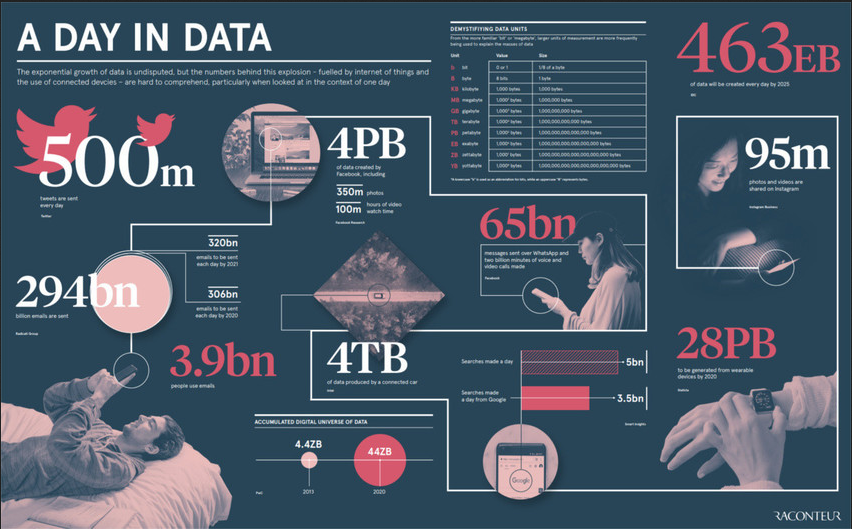
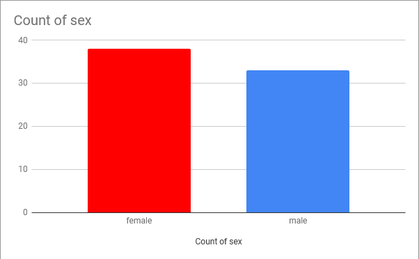
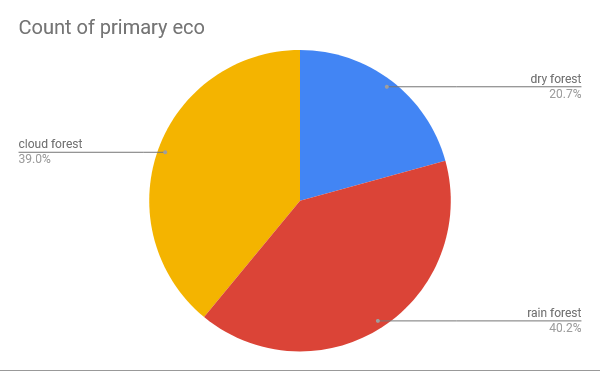
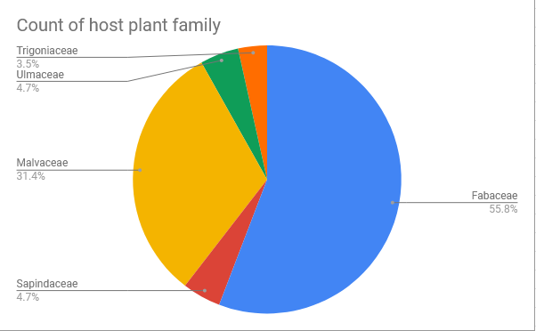
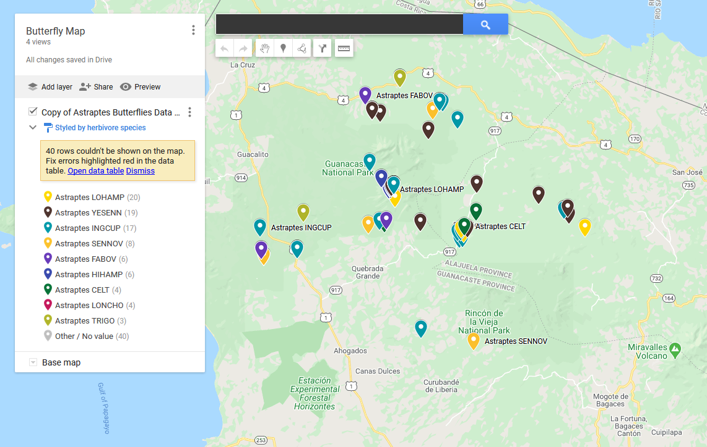
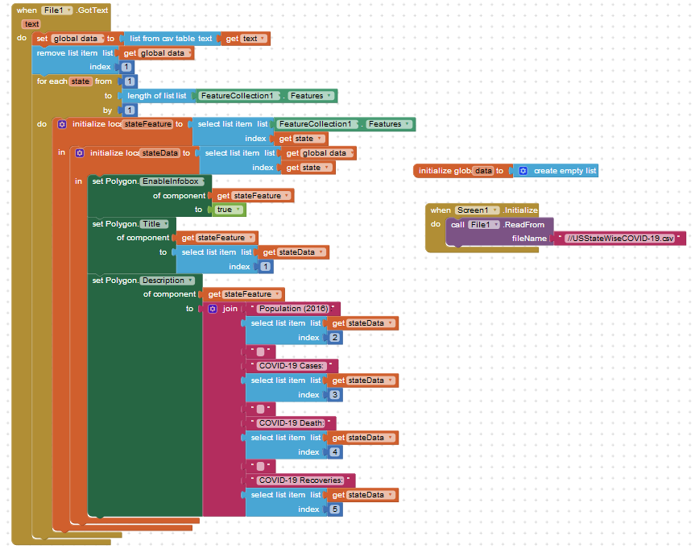

7.2
Big Data
Q1:Choose one of the data sets listed above in the Activity section or one that you find on your own and give a brief description of it. What specifically were the types of data (text, sounds, transactions,
etc.) included in the data set you chose?
A1:

The data set I chose is A Day In Data and the types of data it represents is the storage and data that has been sent over time on the Internet. As you can see this data set shows how much emails were sent, tweets per day,
amount of messages sent, photos on Facebook, etc. All of these are datas on technology.
Q2:What new facts did you learn when exploring the data set? List at least 3 facts.
A2:New facts I learned when exploring the data set are the amount of tweets per day, how much data a connected car used, and how there are bigger bytes than terabytes such as petabyte, exabyte, and more.
Q3:Write a question you have about the data set you chose. Now, convert that question into a hypothesis (a statement) with your prediction about the data.
A3:How much digital universe of data will be accumulated by 2025?
I think it will accumulate around 72 ZB of data by 2025.
Q4:Identify at least one security and/or privacy concern that is associated with the data in the data set you chose?
A4:One privacy concern associated with the data is how long have they been tracking this and why I didn’t know that they were tracking all this data of anyone using their services.
How long have they been following us?
Q5:If your data set included a visualization, explain the purpose of the visualization. How would you change or improve the visualization? If it did not include a visualization, describe one
that you think would be useful in understanding the data.
A5:The visualizations were the huge numbers and images of people using their phones or services. I would change these visualizations by adding in graphs so it can show the comparisons of the
different data and maybe a trend of data accumulated over the years.
7.3
Visualizing Data
Q1:(Activity 2) Write a spreadsheet formula that calculates the average elevation for the data in this spreadsheet. Write your formula and the result found in your portfolio.
A1:The formula we wrote for the spreadsheet was =AVERAGE(J2:J88). The result we found was 705.2873563 for the elevation.
Q2:(Activity 2) Are there more male or female butterflies in this data set? Include a screenshot of your chart to answer this question. What kind of data is in your chart?
A2:

There are more female butterflies in this data set. The data in our charts are the amount of female and male butterflies in the study.
Q3:(Activity 2) Which ecological environment (primary eco column) do these butterflies like to live in? There is no clear winner in this question so give the percentages in each ecological environment in a screenshot of your chart.
What kind of data is in your chart?
A3:

The butterflies like to live in rain forests and the kind of data that is in our chart is where the butterflies live and shelters in the study.
Q4:(Activity 2) Come up with a 3rd question and use charting to answer it. Include the screenshot. What kind of data is in your chart?
A4:

What is the most common host plant family?
The data used in our chart was from our Google Sheets and the data shows the host plant family from the data set.
Q5:(Activity 3) Include a screenshot and link of the map you created for this data.
A5:

Butterfly Map
7.4
Data Visualization Project
Q1:Which data set did you select and why did you choose it?
A1:The data set we selected was the Walmart data set of their sales, stores, and more. We chose this data set because we both liked Walmart and found it interesting to have data on such a super chain store across the nation.
Q2:Summarize the data included, being specific about the types of data (text, sounds, transactions, etc.) included. Make sure you list the title and the website (URL) where you found the data.
A2:The Walmart data, Walmart Recruiting - Store Sales Forecasting, was from Kaggle and the types of data are transactions, temperature, store size in square feet, weather, and sales data.
Q3:List your 3-5 hypotheses and the data visualizations that you created for each. (Include the visualizations as images on your portfolio or provide a link to them shared with your instructor.)
A3:
Hypothesis 1: What is the biggest size Walmart? (Sq.Feet)?
We think it is 125,000 square feet, but we were wrong.

Hypothesis 2: What is the average temperature of all Walmart combined?
We think it is around 60 degrees Fahrenheit, but once again, we were wrong.

Hypothesis 3: What is the highest weekly sales of all Walmart? We thought it was around 150,000 units, but we were wrong on the hypothesis.

Q4:Explain how collaborating with a partner helped you gain new insight or knowledge about the data.
A4:Collaborating with a parnter gave me a new insight of how others view data and what they focus on instead. I like to focus on the major details and ideas of sales, but my partner was intrigued by the small data of how big a store was and what the average temperature and weather was like.
Q5:Identify at least one security and/or privacy concern that is associated with the data in the data set you chose.
A5:One security concern that is associated with the data we chose was how easily it was to access and view the weekly sales and how it can be used against them towards others competitors to see if they can beat their sales. It gives the world the knowledge of how much money they are making and how popular they are, while giving other businesses ideas on how to challenge them.
7.5
Data Map App
Q1:How and why are files used as a data abstraction in this app?
A1:The files were used as lists to gather data from each other which also helped organized our data and our code gave the app the knowledge on which columns and rows to focus on. Our code had each column focus on an index number where the data is then received from it and then inputted into the app.
Q2:Explain the List of Lists data abstraction used in this app.
A2:The list of lists data abstraction is literally grab a list within a list to put into the app. It took the list of spreadsheets of states then another list of the features, our COVID-19 list, which was our features and then they were combined and used as a list within a list.
Q3:When and why do programmers use APIs?
A3:Programmers uses APIs to tell how the programs should act and run. They are basically rules enforcing how everything should go and how it is suppose to interact with each other.
Q4:Provide screenshots of your enhancement projects. (At least ONE and TWO)
A4:
 >
7.7
Machine Learning and Arificial Intelligence
Q1:In the Teachable Machine activity, what inputs were easy for the program to learn to distinguish and what inputs were more difficult?
A1:Inputs that were easy for the program to learn was the simple movements and identifying objects, but as soon as you start to mix up the same object with different poses, then it starts to get more and more difficult to read and comprehend.
Q2:Search online and identify another application area for AI or machine learning besides the ones described in this lesson. Is this task hard easy for humans but hard for computers to do?
A2:Besides facial recognition and movements, there is auto drive and traffic monitoring. This is easier for humans to do since we already used to it and have been near it our whole life and we are more aware of our actions due to our consciousness. For computers, they need to identify many varying elements and figure it out quickly, also they were not exposed to this task for many years like us, so experience wise it will make it a bit harder for them.
Q3:In this lesson you saw some examples of gender bias in a machine translation program. Identify another form of unconscious bias and give an example of how it could affect a computer program. Explain how that could be a harmful effect on society, economy, or culture.
A3:Another form of unconscious bias would be age bias and an example of this is people older than 40. It can affect how a computer program on what to recommend them, how to help them, and this can give the wrong information to the wrong people causing trouble such as health problems, money issues, and much more because of the wrong information due to their bias. They might recommend different age products, causing inaccurate data and trouble to many.
7.8
Impacts of CS (Who owns the bits?)
Q1:In your own words, define the concept of copyright. Why should all Internet users be aware of copyrighted material?
A1:Copyright is an agreement with the government and the creator that certain work where it gives the creator the rights of their work when others uses it. Internet users should be aware because not every material is free and it will belong to someone.
Q2:What is the difference between digital and printed documents that makes it easier to violate copyright law with digital ones?
A2:Digital is online and is on the Internet, also takes less time to create. Since it is over the Internet, it can be easier to track down if violated. Printed documents are in hand and will be harder to track down since there is many more ways to get away with it unlike digital where it is stuck on the web.
Q3:What is a peer-to-peer architecture? Provide an example of at least one well-known peer-to-peer network.
A3:Peer-to-peer architecture is where the network acts both as the client and server for the computer. An example of this is Napster.
Q4:What is the DMCA and why is it significant to copyright, especially with regards to electronic works (documents, images, videos, etc.)?
A4:DMCA is the Digital Millennium Copyright Act which is a law that stops copyright infringement and if violated by others, they will face consequences which is really important to digital works since it can be easily broken and copied all over the Internet.
Q5:What are Open Access and Creative Commons? How have they impacted the sharing of digital information?
A5:Open Access is a way to share information that is not copyrighted and lets others uses it. Creative Commons is an organization that assists others to put out legal products such as tools and programs that will share information to others. They impacted the sharing of digital information by allowing others to freely access and use it the way they want to without violating any ownership of others because it is open access!
Q6:The Blown to Bits book is released under a Creative Commons (CC) license, specifically the Attribution-NonCommercial-ShareAlike 3.0 license. What does this license allow people other than the authors to do? What is the relationship between the original Blown to Bits book and the newer, Blown to Bits (version 2.0) book? Did the authors of the newer version stay true to the CC license? How can you tell? (Optional) If your favorite book or movie was released with a CC license, how would you change it?
A6:The certain license allows everyone to use it in many ways such as sharing, editing, etc. The newer version will be following the same way of the old BTB since it is under the CC license. Also the newer version followed and credited the old book, but instead they just added more revisions and re-updated, but since they credited and is still under the license, it is fine.
Q7:The chapter describes three peer-to-peer networks, each of which can be used to share copyrighted works illegally. Why did the courts find that Napster and Grokster were liable for the illegal activities of it's users, while BitTorrent is not?
A7:For downloading with BitTorrent, you will need the pirated content site and the content manager, a two part situation in order to download the pirated products. For BitTorrent, they did not have the pirated content site nor the content manager, which helped prove themselves as legal activities rather than illegal.
Q8:What effect have streaming services such as Netflix and Spotify had on illegal downloading activities?
A8:Netflix and Spotify are paid subscriptions with high quality contents and they are also permitted by copyright laws making them safe for people to stream their service. Since all of the threats of copyright and high quality work is finished, it makes their services easy and safe for many which incentivize people to buy their service rather than pirating or illegally streaming or downloading the content.
Q9:Why was it important for Jack Andraka to have access to research articles? In general, how has access to information helped to identify problems, develop solutions, and disseminate results?
A9:It was important for Jack Andraka to have access to research articles because his information mainly revolved from online articles. The access to information allows anyone to contribute in and assist on any problem, solutions, and results, giving many more hands and brains to join together and assist each other. It is also more convenient to just search and find results anywhere rather than traveling around and searching for it in the wild.
Q10:What is your responsibility as an app developer in regards to the fair use of copyrighted works such as images and music? Give one example use of a copyrighted work in an app that follows fair use guidelines and one example that violates fair use guidelines.
As an app developer, I should always remember to cite correctly and attribute credits to the information and materials I had used in my apps.An example is making an app that uses images to depict information and in order to use the images, we need to credit the artist. If we do not credit the artist of the images, we will be violating the fair use guidelines.
Q11:In your opinion, are YouTube users violating copyright terms when they make lyric videos? Why or why not?
A11:In my opinion, no, YouTube users are not violating the copyright terms when making lyric videos because they usually give credit to the original artists and since the song is already free everywhere including YouTube, they should be allowed to use it without violating copyright terms since it is released freely everywhere for people to listen and watch.